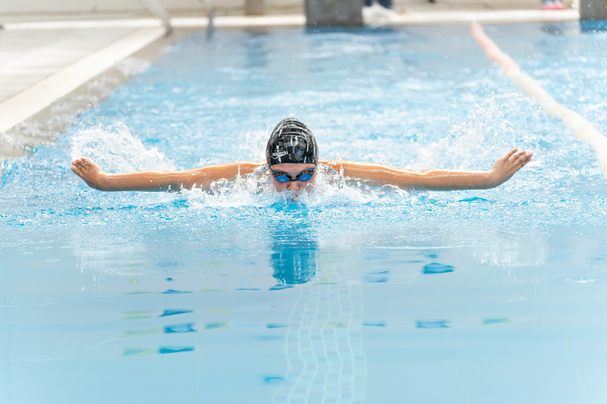

|
Los deportes acuáticos se realizan en el agua (piscina, mar o río) y se dividen en natación (velocidad y resistencia),
saltos (trampolín y plataforma), sincronizada y waterpolo. También
incluyen el surf, remo y vela, que aprovechan el entorno natural. Son
ideales para mejorar la capacidad pulmonar y la fuerza muscular sin
impacto en las articulaciones. |
|---|

| TOP DEPORTES ACUATICOS MAS JUGADOS: 1.Natación 2.Surf 3.Waterpolo 4.Vela 5.Piragüismo (Canoa/Kayak) 6.Buceo (Snorquel y Scuba) 7.Remo 8.Esquí Acuático 9.Paddle Surf (SUP) 10.Kitesurf |
RÉCORDS MUNDIALES ACTUALES:
|